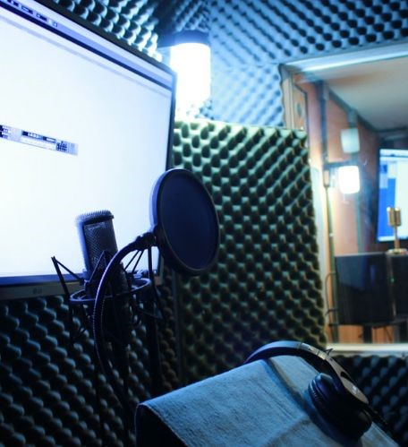
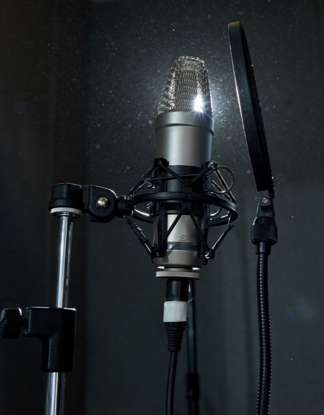

Somos tres estudiantes universitarios comprometidos con la construcción de espacios laborales seguros y justos para el futuro. Nuestra pasión por el entretenimiento y los derechos humanos nos llevó a crear esta plataforma que combina información, apoyo y acción para combatir las injusticias en la industria del doblaje mexicana. Creemos que el cambio comienza con la visibilidad y el acceso a herramientas concretas, y trabajamos para empoderar a nuestras audiencias a través de un enfoque inclusivo y colaborativo.
Crear un espacio multimedia que visibilice, eduque y oriente sobre los casos de abuso y problemáticas dentro de la industria del doblaje mexicana . Buscamos sensibilizar a nuestra audiencia, proporcionar apoyo a las víctimas y fomentar un entorno laboral seguro en el país y justo mediante contenido informativo, foros interactivos y recursos de acción legal y psicológica.
en años la plataforma líder en México para promover la justicia y la igualdad en la industria del entretenimiento, y en 3 años expandirnos a otros entornos laborales. Logrando un impacto social significativo a través de la difusión de información, la creación de comunidades de apoyo y el impulso de una cultura de cero tolerancia hacia el acoso y abuso laboral.
Para Empezar
El doblaje es el arte de sustituir las voces originales de una producción audiovisual (películas, series, videojuegos, etc.) por otras en un idioma diferente. Esto permite que personas de todo el mundo puedan disfrutar de sus contenidos favoritos en su lengua materna.

El acoso sexual en el mundo del doblaje es un problema grave. Aunque pueda parecer un ambiente creativo y colaborativo, los estudios de doblaje no son inmunes a conductas inapropiadas y abusivas. A continuación presentarems ¿Cómo se manifiesta el acoso sexual en el doblaje? y entornos laborales y como hacerle frente.
El acoso sexual es una forma de violencia de género que consiste en cualquier conducta de naturaleza sexual, ya sea verbal, física o psicológica, que tenga el propósito o el efecto de atentar contra la dignidad de una persona, creando un entorno intimidatorio, hostil, degradante u ofensivo.
